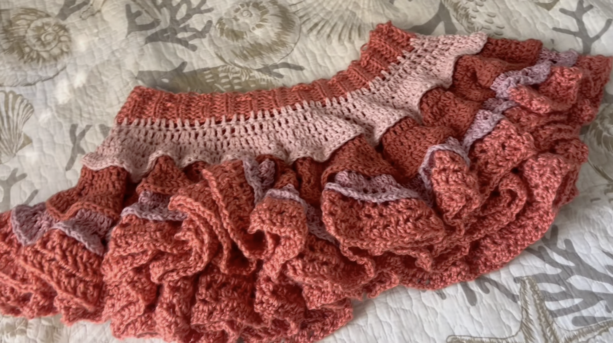
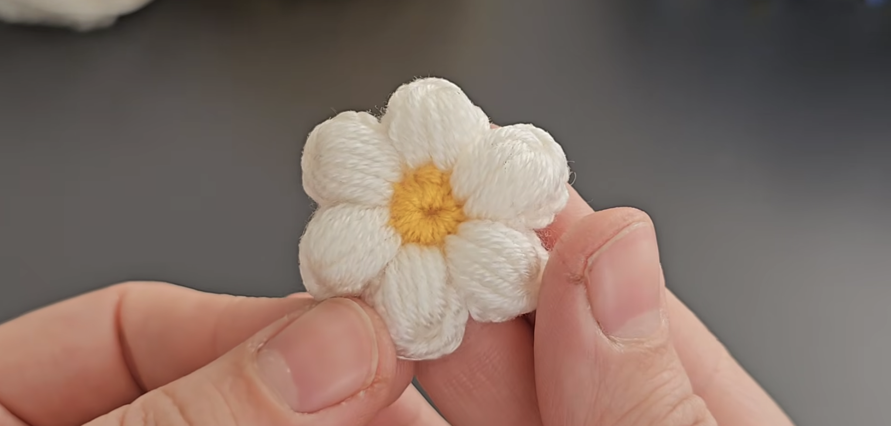
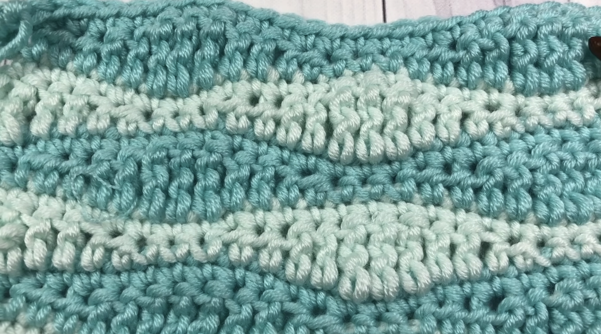

This project is intermediate-advanced level, and requires following a pattern, rather than free-handing. It also requires some more time and coordination, but results in a satisfying wearable! here.

This project uses a variation of stitches with a granny circle, making it a more beginner-intermediate project. Find the video here.

This pattern can be used in a multitude of projects, but comes under an intermediate level because it requires following a pattern accurately to be successful, and takes more time to pick up the pattern. It is a combination of a multitude of beginner stitches. Find the video here.